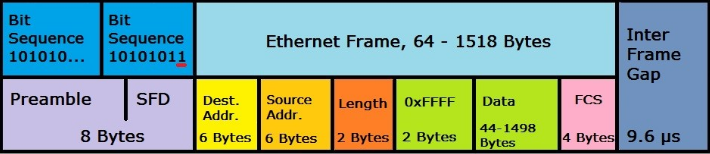

DATALINK LAYER
ETHERNET :Old technology .
CSMA/CD : Used to determine when the communications channels are clear, and when a devices is free to transmit data.
MAC : A globally unique identifier attached to an individual network interface.
Octet form.
First three octets of a MAC address - OUI - Organizationally Unique Identifier
Last three octects :unique
→ Ethernet uses MAC to ensure that tha data it sends has both an address for machine that sends and recieves.
This way traffic can be organized, avoiding collisions.
Unicast :
Transmission is always meant for just one recieving address.
If the least significant bit in ip address is set to 0 -> Only for one destination address
If the least significant bit in ip address is set to 1 -> Multicast frame
Ethernet broadcast :Sent to every single device on the LAN .
ETHERNET FRAME : Highly structured info
Data Packet : An all-encompassing term that represents any single set of binary data being sent across a network link.
• Preamble – informs the receiving system that a frame is starting and enables synchronisation.
• SFD (Start Frame Delimiter) – signifies that the Destination MAC Address field begins with the next byte.
• Destination MAC – identifies the receiving system.
• Source MAC – identifies the sending system.
• Type – defines the type of protocol inside the frame, for example IPv4 or IPv6.
• Data and Pad – contains the payload data. Padding data is added to meet the minimum length requirement for this field (46 bytes).
• FCS (Frame Check Sequence) – contains a 32-bit Cyclic Redundancy Check (CRC) which allows detection of corrupted data.
